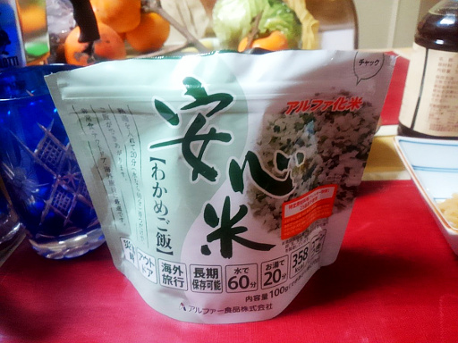

なぜか自宅に買ってもいないアルファ米があったので食べてみた。
作り方は簡単で、袋を開けて内部の線まで熱湯を入れ、20 分待つだけだ。
アルファ米については、自宅で炊いたご飯と比べてあまり美味しくないという評価を聞いていたので、お湯を注いで 20 分の間ちょっとドキドキしていた。
で、20 分経って口に入れてみた。
ん？そんなにまずくない、というよりもそこそこ美味しい。確かに自宅で宅ご飯にはかなわないけれど、まずいという程ではない。
これは登山の時やキャンプで軽量化したい時などに、有力なご飯を食す選択肢になるんではないだろうか、というかそんな風に使われてるよね、実際。
アルファ米が炊飯してつくったご飯と比べて不利なのは、20 分間の待ち時間の間に若干冷めてしまうことかなぁ、とは思った。
でも、登山や軽量化キャンプでのアルファ米はありじゃないかと思う。